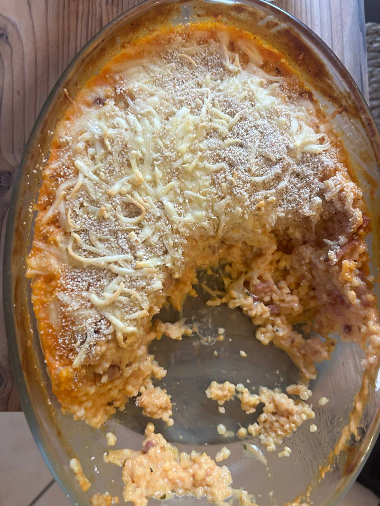

← Recettes

Gratin de Tendres Perles Sauce Tomate & Lardons
⏱️ 15 min
🔥 15 min
👥 4 pers.
🍽️ Plat
🍅 Sauce tomate maison
Ingrédients
- 200 g de Tendres Perles Tipiak
- 150 g d'allumettes de lardons
- 300 g de sauce tomate maison
- 15 cl de crème liquide
- 120 g de fromage râpé
- Chapelure
- Huile d'olive, sel, poivre
Préparation
-
1Faire bouillir 1,5 L d'eau salée, y plonger les 200 g de Tendres Perles et cuire 6-7 min
-
2Égoutter les perles et les verser dans un plat à gratin
-
3Faire dorer les lardons à la poêle 3-4 min, puis verser sur les perles (avec la graisse de cuisson)
-
4Mélanger 300 g de sauce tomate + 15 cl de crème, saler, poivrer : verser et remuer doucement pour enrober
-
5Parsemer de fromage râpé puis de chapelure
-
6Enfourner à 180°C pendant 15 min (10-12 min en chaleur tournante) jusqu'à ce que le dessus soit doré 🧀